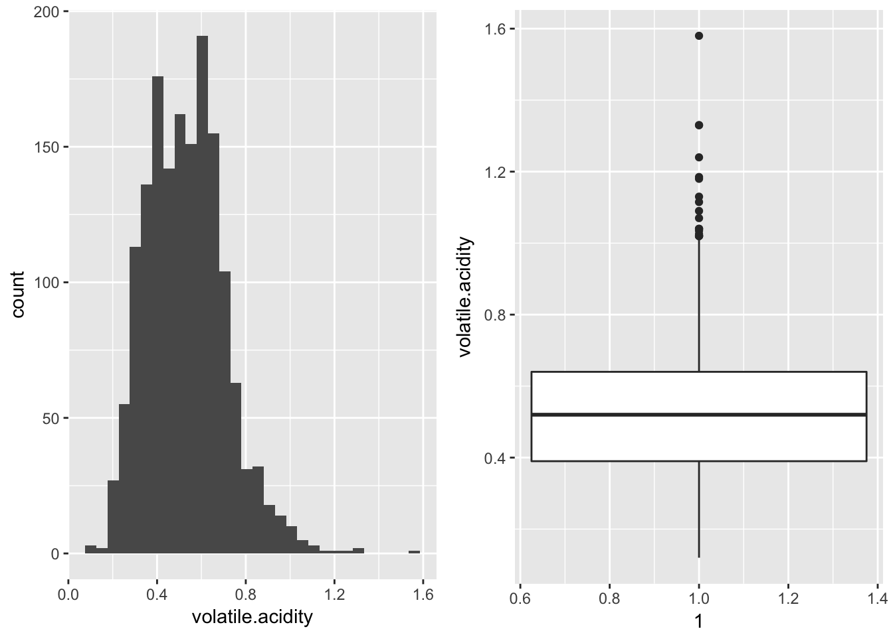

The data that I am going to investigate is a data set that contains characteristics of various red wines including a quality score. The first set of exploratory data analysis will pertain to univariate data displays and the second section will focus more on bivariate. Overall, this EDA will be a stream-of-consciousness analysis and exploration of the data. The goal will be to find find features that have stronger correlation values with each other and in particular features that are correlated highly with the quality score in hopes of developing a predictive model.
## [1] 1599 12## 'data.frame': 1599 obs. of 12 variables:
## $ fixed.acidity : num 7.4 7.8 7.8 11.2 7.4 7.4 7.9 7.3 7.8 7.5 ...
## $ volatile.acidity : num 0.7 0.88 0.76 0.28 0.7 0.66 0.6 0.65 0.58 0.5 ...
## $ citric.acid : num 0 0 0.04 0.56 0 0 0.06 0 0.02 0.36 ...
## $ residual.sugar : num 1.9 2.6 2.3 1.9 1.9 1.8 1.6 1.2 2 6.1 ...
## $ chlorides : num 0.076 0.098 0.092 0.075 0.076 0.075 0.069 0.065 0.073 0.071 ...
## $ free.sulfur.dioxide : num 11 25 15 17 11 13 15 15 9 17 ...
## $ total.sulfur.dioxide: num 34 67 54 60 34 40 59 21 18 102 ...
## $ density : num 0.998 0.997 0.997 0.998 0.998 ...
## $ pH : num 3.51 3.2 3.26 3.16 3.51 3.51 3.3 3.39 3.36 3.35 ...
## $ sulphates : num 0.56 0.68 0.65 0.58 0.56 0.56 0.46 0.47 0.57 0.8 ...
## $ alcohol : num 9.4 9.8 9.8 9.8 9.4 9.4 9.4 10 9.5 10.5 ...
## $ quality : int 5 5 5 6 5 5 5 7 7 5 ...## fixed.acidity volatile.acidity citric.acid residual.sugar
## Min. : 4.60 Min. :0.1200 Min. :0.000 Min. : 0.900
## 1st Qu.: 7.10 1st Qu.:0.3900 1st Qu.:0.090 1st Qu.: 1.900
## Median : 7.90 Median :0.5200 Median :0.260 Median : 2.200
## Mean : 8.32 Mean :0.5278 Mean :0.271 Mean : 2.539
## 3rd Qu.: 9.20 3rd Qu.:0.6400 3rd Qu.:0.420 3rd Qu.: 2.600
## Max. :15.90 Max. :1.5800 Max. :1.000 Max. :15.500
## chlorides free.sulfur.dioxide total.sulfur.dioxide
## Min. :0.01200 Min. : 1.00 Min. : 6.00
## 1st Qu.:0.07000 1st Qu.: 7.00 1st Qu.: 22.00
## Median :0.07900 Median :14.00 Median : 38.00
## Mean :0.08747 Mean :15.87 Mean : 46.47
## 3rd Qu.:0.09000 3rd Qu.:21.00 3rd Qu.: 62.00
## Max. :0.61100 Max. :72.00 Max. :289.00
## density pH sulphates alcohol
## Min. :0.9901 Min. :2.740 Min. :0.3300 Min. : 8.40
## 1st Qu.:0.9956 1st Qu.:3.210 1st Qu.:0.5500 1st Qu.: 9.50
## Median :0.9968 Median :3.310 Median :0.6200 Median :10.20
## Mean :0.9967 Mean :3.311 Mean :0.6581 Mean :10.42
## 3rd Qu.:0.9978 3rd Qu.:3.400 3rd Qu.:0.7300 3rd Qu.:11.10
## Max. :1.0037 Max. :4.010 Max. :2.0000 Max. :14.90
## quality
## Min. :3.000
## 1st Qu.:5.000
## Median :6.000
## Mean :5.636
## 3rd Qu.:6.000
## Max. :8.000In total there are 1599 observations of 12 features of the observations are valid. Before doing any analysis, it is a good idea to check and see how many entries in the dataset are “NA”. The total count of NA in each data feature is below.
## fixed.acidity volatile.acidity citric.acid residual.sugar chlorides
## 1 0 0 0 0 0
## free.sulfur.dioxide total.sulfur.dioxide density pH sulphates alcohol
## 1 0 0 0 0 0 0
## quality
## 1 0The red wines data set is not missing any values from the 1599 observations across any of the 12 variables. This is nice as every wine then will be used in our visual data exploration.
To check the distribution of several of the features that will be probed more deeply and to detect possible outliers, histograms and box plots will be explored.
## [1] Skewness of alcohol feature: 0.859214416825242For alcohol content there are some potential outliers on the high side and the data does have a larger skewness value of 0.8592 showing the easily observed positive skewness of the data.
## [1] Skewness of citric.acid feature: 0.317740288553393For citric acid there only appears to be one outlier at 1.0. The distribution of citric.acid does seem to be skewed right a bit. A skewness value of 0.3177403 for citric.acid does show positively skewed data.

## [1] Skewness of volatile.acidity feature: 0.670333074134222While volatile.acidity does have some high side outliers, the data overall does appear unimodal, with a skewness of 0.67, so another feature that is skewed to the right.
## [1] Skewness of sulphates feature: 2.42411764489109## [1] Skewness of fixed.acidity feature: 0.980908398729065## [1] Skewness of residual.sugar feature: 4.53213992439674For sulphates, fixed.acidity, and residual.sugar the general distributions are similar: unimodal, skewed right and there are clearly many high side outliers. These outliers will be cleaned from the data. The outliers are probably causing the skewness values (sulphates: 2.42, fixed.acidity: 0.98, residual.sugar: 4.53) to be so large. With the ouliers removed it may be easier to see how the majority of the data is distributed.
The outlier points will be removed from the data and univariate plots redone below. The cutoffs for determining outlier status are whether the point is lower than the (25th percentile - 1.5 * Interquartile Range) or higher than (75th percentile + 1.5 * (interquartile Range)). The more central data is preserved and the univariate plots (with outliers removed) are shown below.
## [1] Skewness of sulphates feature: 0.599773943591409## [1] Skewness of residual.sugar feature: 0.58223147028072## [1] Skewness of volatile.acidity feature: 0.262573184388865## [1] Skewness of fixed.acidity feature: 0.570685808763321With the outliers removed, one can now see the distribution for the bulk of the data for each feature more clearly. The skewness values for the distributions of sulphates, residual.sugar, volatile.acidity, and fixed.acidity were all reduced as expected now that the high side outliers are removed. The remaining analysis will be performed on the reduced data set with these outlier observations removed, reducing the number of observations to 1329 from the original 1599, an appoximately 17% reduction in the number of observations.
## [1] 1329 12An interesting note on the distribution of quality is that no wine is given a score of 0,1,2,9 or 10. The data is clustered in the middle of the range for possible quality scores.
Just to get an idea about how some of the features are distributed pair-wise, a The collection of plots below gives us an idea of how several pairs of variables may be related and histograms of those variables.
For the scatter plot matrix, a subset of features (citric.acid, alcohol, pH, fixed.acidity, density) were chosen. While many of the plots do not show much of a correlation between pairs of variables there are a few that stand out as potentially having a stastically significant correlation. These include: pH & citric.acid (row 1, column 3), fixed.acidity & citric.acid (row 1, column 4), pH & fixed.acidity (row 3, column 4), fixed.acidity & density (row 4, column 5). A more thorough investigation will be included in section 2 of at least one of these relationshsips.
One of the original questions I had was if the distributions of a single feature conditioned on quality score were different then that might mean that feature is well correlated to quality and may aid in developing a predictive model. So, conditioning the previous density plots on quality will yield the univariate distributions that I am interested in.
The univariate distributions of the variables citric.acid, alcohol, fixed.acidity, and volatile.acidity do show a significant difference in the distributions conditioned on quality score. When creating the predictive model, it will probably be a subset of these features that is used. The residual.sugar distributions do not show much variation between the different quality scores.
## fixed.acidity volatile.acidity citric.acid
## fixed.acidity 1.000 -0.247 0.661
## volatile.acidity -0.247 1.000 -0.600
## citric.acid 0.661 -0.600 1.000
## residual.sugar 0.252 0.038 0.160
## chlorides 0.180 0.084 0.111
## free.sulfur.dioxide -0.118 -0.043 -0.036
## total.sulfur.dioxide -0.072 0.083 0.038
## density 0.626 0.080 0.300
## pH -0.684 0.214 -0.485
## sulphates 0.164 -0.312 0.255
## alcohol -0.120 -0.233 0.096
## quality 0.077 -0.352 0.197
## residual.sugar chlorides free.sulfur.dioxide
## fixed.acidity 0.252 0.180 -0.118
## volatile.acidity 0.038 0.084 -0.043
## citric.acid 0.160 0.111 -0.036
## residual.sugar 1.000 0.131 0.044
## chlorides 0.131 1.000 -0.082
## free.sulfur.dioxide 0.044 -0.082 1.000
## total.sulfur.dioxide 0.132 0.012 0.645
## density 0.412 0.307 -0.052
## pH -0.070 -0.163 0.095
## sulphates 0.052 0.041 0.079
## alcohol 0.052 -0.217 -0.007
## quality 0.023 -0.144 -0.016
## total.sulfur.dioxide density pH sulphates alcohol
## fixed.acidity -0.072 0.626 -0.684 0.164 -0.120
## volatile.acidity 0.083 0.080 0.214 -0.312 -0.233
## citric.acid 0.038 0.300 -0.485 0.255 0.096
## residual.sugar 0.132 0.412 -0.070 0.052 0.052
## chlorides 0.012 0.307 -0.163 0.041 -0.217
## free.sulfur.dioxide 0.645 -0.052 0.095 0.079 -0.007
## total.sulfur.dioxide 1.000 0.085 -0.034 -0.081 -0.202
## density 0.085 1.000 -0.260 0.086 -0.597
## pH -0.034 -0.260 1.000 0.041 0.210
## sulphates -0.081 0.086 0.041 1.000 0.260
## alcohol -0.202 -0.597 0.210 0.260 1.000
## quality -0.202 -0.260 -0.028 0.397 0.518
## quality
## fixed.acidity 0.077
## volatile.acidity -0.352
## citric.acid 0.197
## residual.sugar 0.023
## chlorides -0.144
## free.sulfur.dioxide -0.016
## total.sulfur.dioxide -0.202
## density -0.260
## pH -0.028
## sulphates 0.397
## alcohol 0.518
## quality 1.000The correlation matrix has usefule information but is not always simple to pick out. This is a lot of information to have in numeric format so a visual representation could help.
The variables that are more highly correlated are represented by larger circles such as the citric.acid and fixed.acidity variables have a larger positive correlation, that looking back at the correlation matrix is approximately 0.672. This will be looked at in some depth later.
First, another look at how some of the variables are related to the quality rating.
One can see that there is a slight tendency for alcohol and quality to increase together. From the correlation matrix this can be seen as their correlation is the largest for any pairing with quality at approximately 0.476. Similarly, sulphates and quality are positively correlated and it should be noted that in general the sulphates values have a relatively small variance as can be gleened from the clustering of points around 0.5 to 0.8 and that there are some noticable outliers that are many IQRs from the median especially at the quality scores of 5 and 6.
The volatile.acidity feature appears to have an overall negative impact on the quality rating as is evidenced by the trend of decreasing average and median volatile.acidity for increasing quality and a correlation value of -0.391.
## # A tibble: 6 × 3
## quality corr_citric.acid_fixed.acidity n
## <int> <dbl> <int>
## 1 3 0.9935096 6
## 2 4 0.5237239 35
## 3 5 0.6069259 566
## 4 6 0.6698948 552
## 5 7 0.7555282 156
## 6 8 0.8436610 14From the scatterplot matrix, there appeared to be a positive correlation between fixed.acidity and citric.acid. From the correlation matrix this is quantified as a correlation of 0.661, which is rather strong. The scatterplot and regression lines for fixed.acidity vs. citric.acid show a positive relationship between the two variables exists at each quality rating. Grouped by quality rating, the correlations between citric.acid and fixed.acidity vary between 0.524 and 0.994. With only few data points at quality scores of 3 and 8 the correlation values can be misleading. But, where the bulk of the data is (quality score of 4-7) the correlations are still rather high. Looking at the definition of the variables may shed some light as to why this correlation is so large:
fixed acidity: most acids involved with wine or fixed or nonvolatile (do not evaporate readily)
citric acid: found in small quantities, citric acid can add ‘freshness’ and flavor to wines
As citric acid is considered non-volatile acid (https://www.ams.usda.gov/sites/default/files/media/Citric%20Acid%20TR%202015.pdf) it would make sense that fixed.acidity would increase as citric.acid increases since citric.acid is non-volatile and hence a component of the fixed.acidity measurement.
Since the description of the citric acid variable lends one to probably guess that since citric.acid can add freshness and flavor then it might lead to a higher quality rating for the wine. An enlargement of a previous plot may show this.
There does appear to be an overall trend that the higher quality wines have a higher citric.acid content as noted previously. However, the data is rather limitted at the lowest and highest values for quality scores so a definitive conclusion is with-held.
Since alcohol is the by product of a process that starts with sugar, it could be interesting to see if as residual.sugar decreases does alcohol content generally rise? One potential source of noise in the relationship is that the sugar content before fermentation was not recorded in the data. It would be better to use the percent change in sugar content in relation to alcohol. For a more in depth look at how alcohol, residual.sugar, and quality are related, a decomposition of the points depicted below into classifications of low (quality score <= 5) and high quality (quality score >= 6) will be done when exploring the data more in depth. First an enlargement of the scatter plot of alcohol and residual sugar.
It appears that both residual.sugar and alcohol are being measured on a scale with increments of 0.1. To break down the wine quality score into just two categories: low and hight quality. To visually get a better idea of the distribution, let’s color the points by quality and perturb them creating a multivariate plot conditioned on low vs high quality.
It appears that the wines with the lower ratings are clustered toward the low end of the percent alcohol by volume measurement as also noted in the density plot of alcohol conditioned on quality score. To see if there really is a difference, just perform a quick summary of the data on the subsets if the data are partitioned into lower quality and higher quality (less than 6, or greater than or equal to 6 respectively).
## [1] "Low Quality Summary"## Min. 1st Qu. Median Mean 3rd Qu. Max.
## 8.400 9.400 9.700 9.893 10.150 13.100## [1] "High Quality Summary"## Min. 1st Qu. Median Mean 3rd Qu. Max.
## 8.70 10.00 10.80 10.86 11.60 14.00As there does appear to be some statistically significant difference between alcohol for low and high quality wines, let’s see if this is reinforced with a box plot of alcohol conditioned on quality (low vs high).
The box plots show a significant difference between the alcohol of a low vs high quality wine with the low quality wines scoring lower in general. A look at the emperical density function conditioned on whether or not low_quality is TRUE could help with our conclusion of whether or not we think the alchool level affects the quality rating.
The probability density functions for alcohol content are significantly different for low vs high quality wines. Low quality wines show a spike near 7-8% alchol and quickly diminish for higher alcohol while high quality wines are more spread out with a higher number of higher percent alcohol wines falling into the high quality score category. This observation is reinforced by the cumulative distribution functions as well.
Now, to perform a simple test for difference of means to see if there is in fact statistical significance between the mean alcohol measurement of each quality category. And, as citric.acid is described as pertaining to “freshness”, the same difference of means hypothesis will be performed. First checking sample sizes to see if there are enough data points in each category for running a test of significance:
## # A tibble: 2 × 2
## low_quality n
## <lgl> <int>
## 1 FALSE 722
## 2 TRUE 607So there are plenty of data points in each classification to run a test for difference of means. Our null hypothesis is that the means are equal: \[H_0: \mu_{lq} = \mu_{hq} \leftrightarrow \mu_{hq} - \mu_{lq} = 0\] vs the alternative that they are not equal \[ H_1: \mu_{lq} \neq \mu_{hq} \leftrightarrow \mu_{hq} - \mu_{lq} \neq 0\].
For mean of alcohol between the two groups:
##
## Welch Two Sample t-test
##
## data: low_q and high_q
## t = -19.497, df = 1243.8, p-value < 2.2e-16
## alternative hypothesis: true difference in means is not equal to 0
## 95 percent confidence interval:
## -1.0671738 -0.8720445
## sample estimates:
## mean of x mean of y
## 9.89341 10.86302And for mean of citric.acid between the two groups:
##
## Welch Two Sample t-test
##
## data: low_q and high_q
## t = -5.4618, df = 1323.4, p-value = 5.624e-08
## alternative hypothesis: true difference in means is not equal to 0
## 95 percent confidence interval:
## -0.07256964 -0.03421501
## sample estimates:
## mean of x mean of y
## 0.2195717 0.2729640With a p-values of less than 2.2e-16 and 5.624e-8 respectively, we can clearly conclude that there is a statistically significant difference in alcohol content and citric.acid content between the high and low quality wines groups. With such small p-values we can go even further to conclude that high quality wines generally have a higher alcohol content and a higher citric.acid content than low quality wines to replace our null hypotheses.
Since several of the variables have larger magnitude correlation (Alcohol, Sulphates, Total Sulfur Dioxide, and Volatile Acidity), I wonder if a model for the classification of quality could be obtained using a multinomial logistic regression approach? For this model, however, I have chosen to use a binary classification tree, with the target (labels) being either low quality or high quality.
The ordering of the quality score within the data appears to not have any pattern so a simple train/test split without shuffling will be done before the model is fit and subsequently tested. The training data will be approximately 70% of the entire dataset with the remaining left for the testing data.
## Confusion Matrix and Statistics
##
## Reference
## Prediction FALSE TRUE
## FALSE 198 78
## TRUE 26 97
##
## Accuracy : 0.7393
## 95% CI : (0.6933, 0.7818)
## No Information Rate : 0.5614
## P-Value [Acc > NIR] : 1.392e-13
##
## Kappa : 0.4529
## Mcnemar's Test P-Value : 5.705e-07
##
## Sensitivity : 0.8839
## Specificity : 0.5543
## Pos Pred Value : 0.7174
## Neg Pred Value : 0.7886
## Prevalence : 0.5614
## Detection Rate : 0.4962
## Detection Prevalence : 0.6917
## Balanced Accuracy : 0.7191
##
## 'Positive' Class : FALSE
## ## [1] 13.46154## Confusion Matrix and Statistics
##
## Reference
## Prediction FALSE TRUE
## FALSE 224 175
## TRUE 0 0
##
## Accuracy : 0.5614
## 95% CI : (0.5112, 0.6107)
## No Information Rate : 0.5614
## P-Value [Acc > NIR] : 0.5209
##
## Kappa : 0
## Mcnemar's Test P-Value : <2e-16
##
## Sensitivity : 1.0000
## Specificity : 0.0000
## Pos Pred Value : 0.5614
## Neg Pred Value : NaN
## Prevalence : 0.5614
## Detection Rate : 0.5614
## Detection Prevalence : 1.0000
## Balanced Accuracy : 0.5000
##
## 'Positive' Class : FALSE
## The accuracy of the classifier is 73.93% on the test data. This is rather better than the majority class classifier which would give an accuracy of 56.14%. Of note is that we eliminated the outliers from the data. So the model may not be a good predictor on outlier data.
From the overlay of jittered data points on the box plot of Quality Rating vs. Citric Acid Content it can be seen that there are few values at a quality score of 3,4 or 8 with the bulk of the data in scores of 5,6. Even with few data points near the ends of the quality score, it can be observed that the central 50% and the median of Citric Acid are both generally increasing as quality score increases. The general increase in median/mean of citric acid for increasing quality score can be more easily observed if the data is split between low and high quality. Splitting the data on quality score of low (0-5) vs high (6-10) the subsets have mean citric acid values of 0.2196 g/dm^3 and 0.2730 g/dm^3 respectively. The two groups have a statistically significant difference in mean citric acid values (using Welch two sample t-test).
It can be observed from the scatterplots of citric.acid vs alcohol conditioned on quality score that as the quality score is increased there is an accompanying general increase in both citric.acid and alcohol. The mean-mean points are plotted (green) to look for an overall trend in the center of the data. What is noticed is an overall movement to the right and up as quality increases. This reinforces our previous hypothesis that as alcohol and citric.acid increase there is an increase in quality score. To extract this pattern a single scatter of mean-mean points colored by quality score is included and again agrees with the hypothesis (in general). We can also observe that within each quality score value the data does not show much of a correlation between citric.acid and alcohol. The higher correlation values for quality scores of 3 and 8 can most likely be attributed to a lack of data. With a very small set of data the correlation may not be representative of the true relationship between citric.acid and alcohol.
Initially in the data exploration, there appeared to be a positive correlation between fixed.acidity and citric.acid. From the correlation matrix this is quantified as a correlation of 0.661, which is rather strong. Grouped by quality rating, the correlations between citric.acid and fixed.acidity vary between 0.524 and 0.994. With only a few data points at quality scores of 3 and 8 the correlation values can be misleading. But, where the bulk of the data is (quality score of 4-7) the correlations are still rather high. This is most likely due to citric acid being a non-volatile acid and hence is one of the acids that is counted in the fixed acidity value.
The red wines data set was already clean and was not missing any values so was an easier data set to explore. So I did not have any trouble with cleaning the data as it was unnecessary. The analysis was logically conducted starting with univariate exploration and, with the intention of model development, visual selection of potential features that could be good to use.
One trouble I did have during the project was simply getting the format of the submission correct. Another was that the syntax of the ggplot library is a little cumbersome and not always one that one can guess intuitively to accomplish a task. For instance changing the text on a legend for a plot is not intuitive, at least not the way I went about it.
The decision to drop the outliers from the dataset has affected the analysis. Nearly 1 in 5 data points was removed from the set. This has eliminated a large proportion of the data. Eventhough there was sufficient data left to create a predictive model, the model has not been validated on the larger set. So a future direction could be to see how the created decision tree model performs on the entire set.
Overall, I was looking for one or more variables that the quality rating was highly correlated with so that a predictive model could be developed for predicting whether a quality was low or high. To this end the development was successful, as it resulted in a model that could predict (on the test data) whether a wine would have a quality score of below 6 vs at or above 6 with an accuracy of about 74%. To improve the fit, a random forest approach could be used to potentially increase the accuracy.
Another potential next step would be to see if an accurate model could be developed to predict the actual quality score (0-10) from the other features. A potential model could be a multinomial logistic regression with multiple classes.
Davies TM. The book of R: a first course in programming and statistics. San Francisco: No Starch Press; 2016.
robk@statmethods.net RK-. Scatterplots. Quick-R: Scatterplots. http://www.statmethods.net/graphs/scatterplot.html. Accessed April 7, 2017.
How to perform a Logistic Regression in R. R-bloggers. https://www.r-bloggers.com/how-to-perform-a-logistic-regression-in-r/. Published September 13, 2015. Accessed April 7, 2017.
changing font size in regression tree plot - Stack Overflow. http://stackoverflow.com/questions/37103734/changing-font-size-in-regression-tree-plot. Accessed April 7, 2017.
ctree (party) changing font sizes in plots. R help - ctree (party) changing font sizes in plots. http://r.789695.n4.nabble.com/ctree-party-changing-font-sizes-in-plots-td907947.html. Accessed April 7, 2017.